wall · [2, 2] mètres par tuile
Pierre irrégulière
Photographique · PBRMission 12 · témoinHybride · palette M12
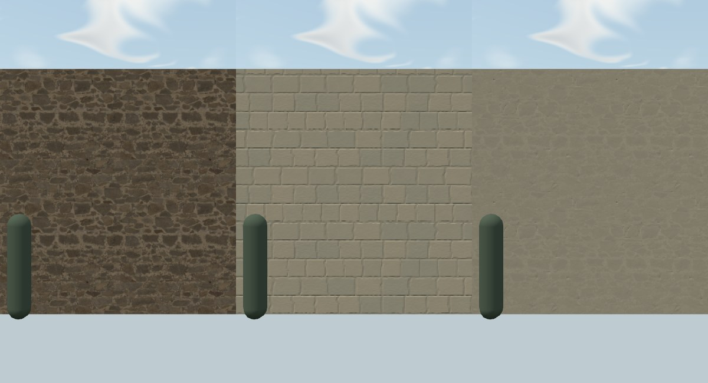
Piste prioritaire pour 13C : irrégularité plus naturelle que les assises du témoin, contraste contenu. La répétition de la source de 2 m demeure visible à grande échelle.
Source : Charlotte Baglioni · CC0 · provider. Relief 9 mm : amplitude artistique de normales, aucun déplacement géométrique.
wall · [2, 2] mètres par tuile
Pierre appareillée · réserve
Photographique · PBRMission 12 · témoinHybride · palette M12
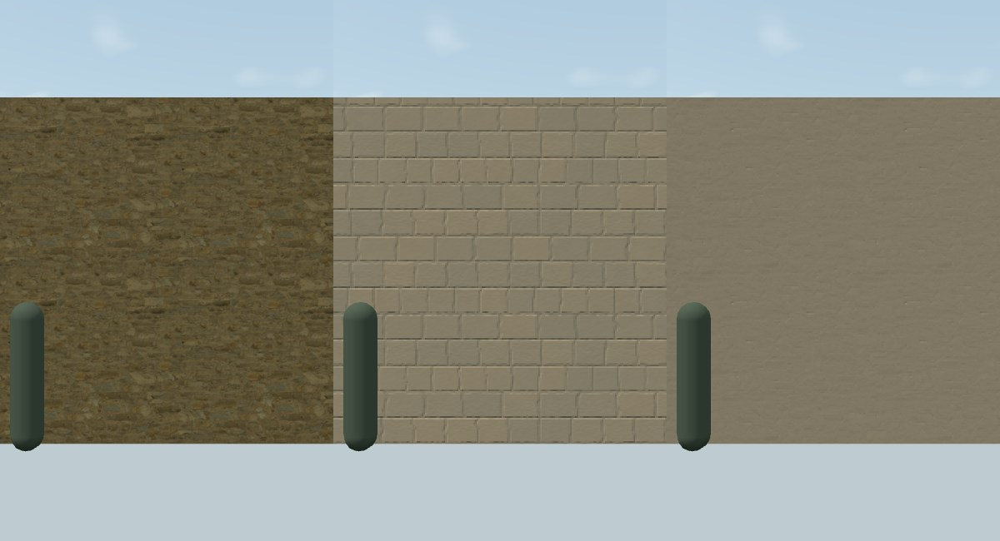
Réserve : autre appareillage, plus régulier. Échelle 2 m interprétée et lithologie locale inconnue ; ne pas le présenter comme calcaire observé.
Source : ambientCG / Lennart Demes (site publisher) · CC0 · artistic estimate; source scale unavailable; not limestone identification. Relief 8 mm : amplitude artistique de normales, aucun déplacement géométrique.
wall · [1, 1] mètres par tuile
Enduit fin
Photographique · PBRMission 12 · témoinHybride · palette M12
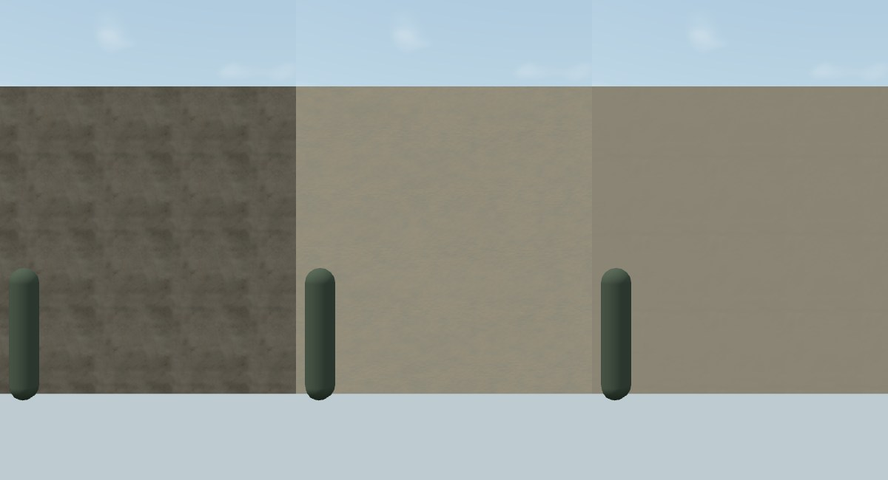
Témoin procédural déjà satisfaisant. Le grain photographique apporte un écart discret ; ne le substituer que si un essai en rue prouve son intérêt.
Source : Rob Tuytel · CC0 · provider. Relief 1.6 mm : amplitude artistique de normales, aucun déplacement géométrique.
wall · [2.3, 2.3] mètres par tuile
Enduit laissant voir la pierre
Photographique · PBRMission 12 · témoinHybride · palette M12
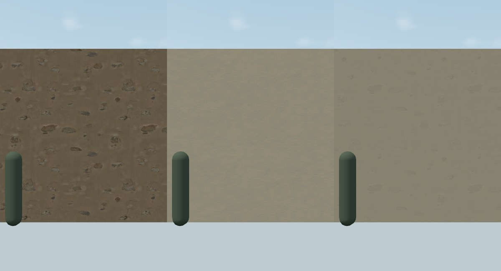
Réserve pour variations d’enduit : les lacunes deviennent très discrètes en hybride. Le PBR montre mieux leur structure mais ses taches sont plus marquées.
Source : Charlotte Baglioni · CC0 · provider rounded to centimetres. Relief 3 mm : amplitude artistique de normales, aucun déplacement géométrique.
roof · [1.5, 1.5] mètres par tuile
Petite tuile rectangulaire · interprétation
Photographique · PBRMission 12 · témoinHybride · palette M12
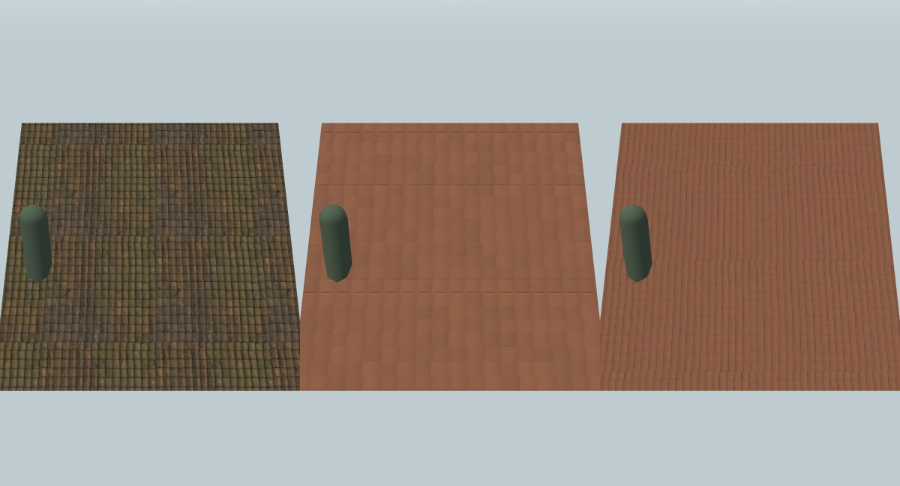
Piste à juger : éléments plus petits et moins bombés que le témoin. La lecture des rangs est très fine en hybride ; conserver le témoin si elle scintille ou paraît trop uniforme dans la rue.
Source : Rob Tuytel · CC0 · provider; no surveyed local roof profile. Relief 14 mm : amplitude artistique de normales, aucun déplacement géométrique.
ground · [2.25, 2.25] mètres par tuile
Gravier fin
Photographique · PBRMission 12 · témoinHybride · palette M12
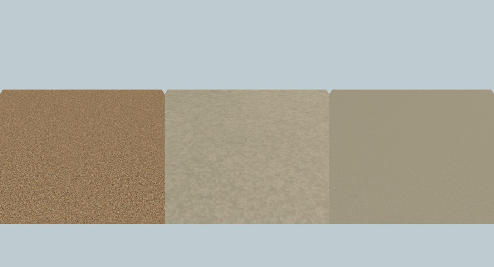
Piste conditionnelle pour les surfaces déjà documentées en gravier. Le PBR est très granuleux ; l’hybride reste plus discret et doit encore justifier son coût en promenade.
Source : Jenelle van Heerden, Matterfield · CC0 · provider; local class must remain documented. Relief 8 mm : amplitude artistique de normales, aucun déplacement géométrique.
ground · [1.3, 1.3] mètres par tuile
Terre sèche générique
Photographique · PBRMission 12 · témoinHybride · palette M12
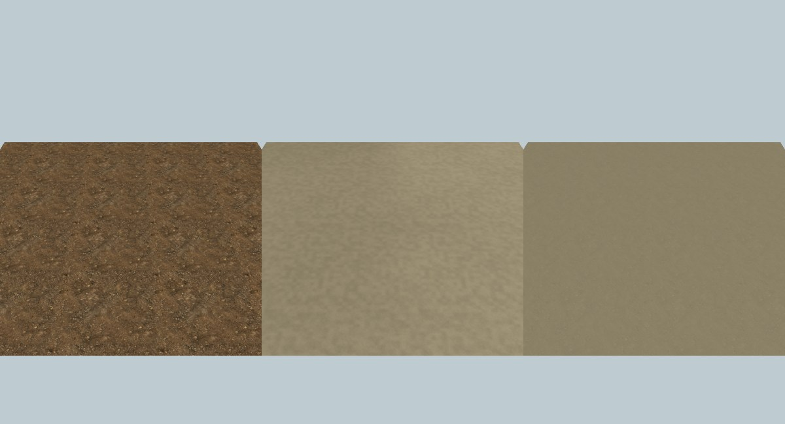
Terre générique de bibliothèque, sans nouvelle attribution géographique. Gain proche modéré ; conserver l’herbe et la litière existantes.
Source : Rob Tuytel · CC0 · provider rounded to centimetres. Relief 6 mm : amplitude artistique de normales, aucun déplacement géométrique.
ground · [1.3, 1.3] mètres par tuile
Terre humide · réserve de berge
Photographique · PBRMission 12 · témoinHybride · palette M12
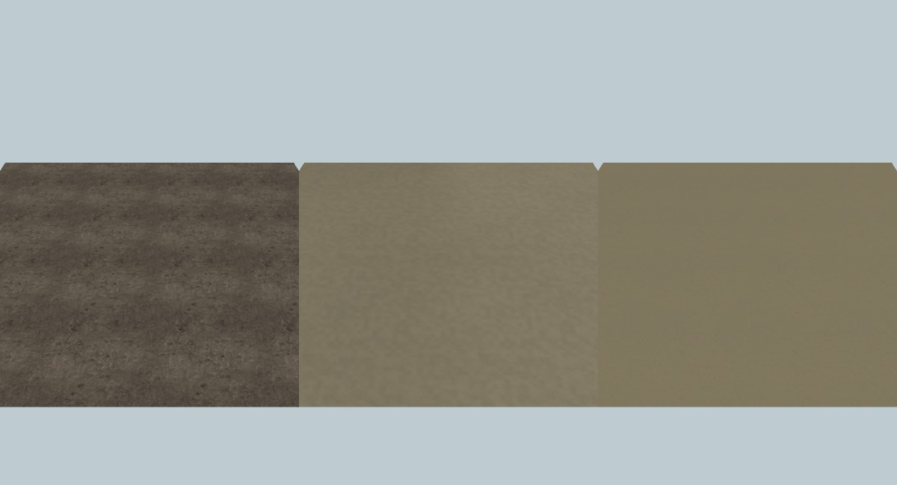
Réserve de contact humide, pas une berge universelle. Ni substrat, ni profondeur, ni débit réels déduits.
Source : Rob Tuytel · CC0 · provider rounded to centimetres; not a universal bank classification. Relief 6 mm : amplitude artistique de normales, aucun déplacement géométrique.
rock · [2.5, 2.5] mètres par tuile
Roche structurée · échelle interprétée
Photographique · PBRMission 12 · témoinHybride · palette M12
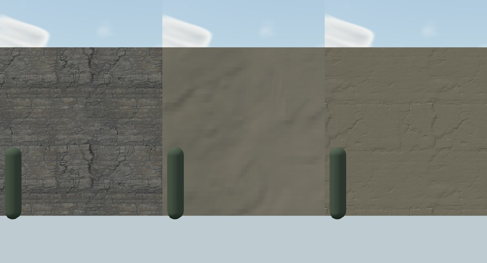
Alternative structurée ; les strates sont lisibles mais l’échelle 2,5 m reste artistique. Ne pas remplacer automatiquement la roche existante.
Source : ambientCG / Lennart Demes (site publisher) · CC0 · artistic estimate; source scale unavailable; no geological identification. Relief 25 mm : amplitude artistique de normales, aucun déplacement géométrique.
rock · [2.7, 2.7] mètres par tuile
Rock Face 03 · source recalibrée
Photographique · PBRMission 12 · témoinHybride · palette M12
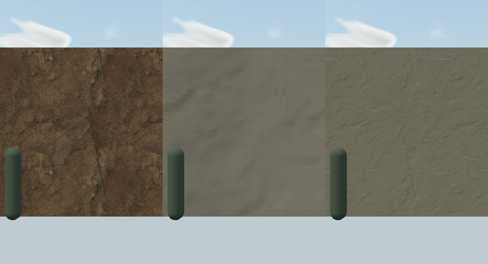
Même source que Mission 12, maintenant étudiée à la largeur fournisseur 2,7 m. Le témoin conserve son échelle antérieure 27 m. L’écart révèle autant le calibrage que le shader.
Source : Dario Barresi, Rico Cilliers · CC0 · provider; Mission 12 reference remains at artistic 27m, unchanged. Relief 25 mm : amplitude artistique de normales, aucun déplacement géométrique.
Voir aussi les répétitions
Surfaces synthétiques de 24 m : aucune rotation aléatoire des rangs de tuiles ou des joints. Décalage stable par identité, faible variation à plusieurs mètres et détails filtrés ; les motifs d’une seule prise restent répétables. Ces vues ne sont pas des rues réellement parcourues.
Pierre irrégulière
Photographique · PBRMission 12 · témoinHybride · palette M12
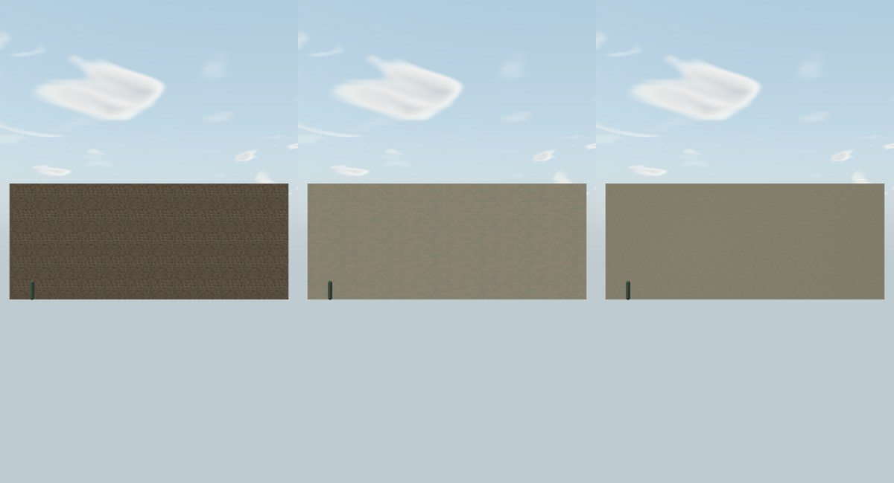
Enduit laissant voir la pierre
Photographique · PBRMission 12 · témoinHybride · palette M12
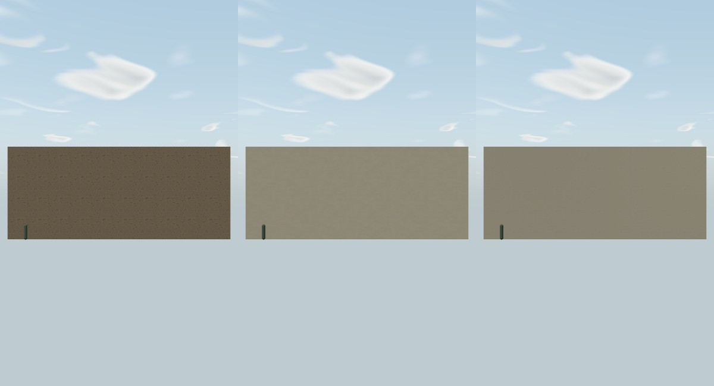
Petite tuile rectangulaire · interprétation
Photographique · PBRMission 12 · témoinHybride · palette M12
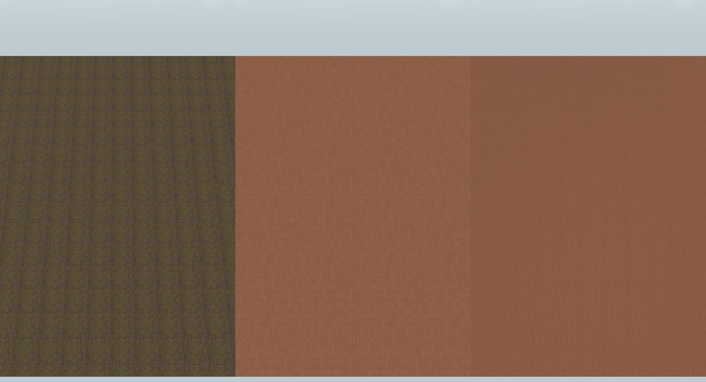
Gravier fin
Photographique · PBRMission 12 · témoinHybride · palette M12
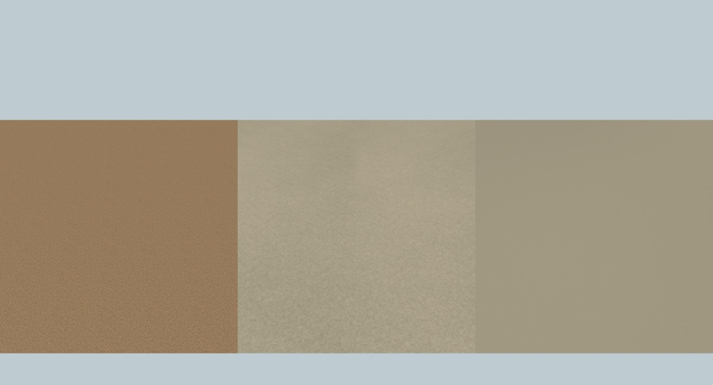
Lointain · 80 m
Photographique · PBRMission 12 · témoinHybride · palette M12
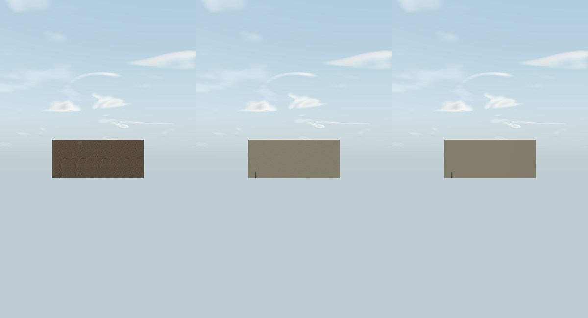
La même pierre du matin à la nuit
Les dix matériaux ont passé les sept situations ci-dessous. Le relief vient des cartes du fournisseur, avec amplitude artistique ; les normales ne sont pas déduites d’une seule photo et les sommets restent fixes. Les couleurs résiduelles et les ombres photographiques du PBR ne sont pas une mesure d’albédo local.
morning · clear
Photographique · PBRMission 12 · témoinHybride · palette M12
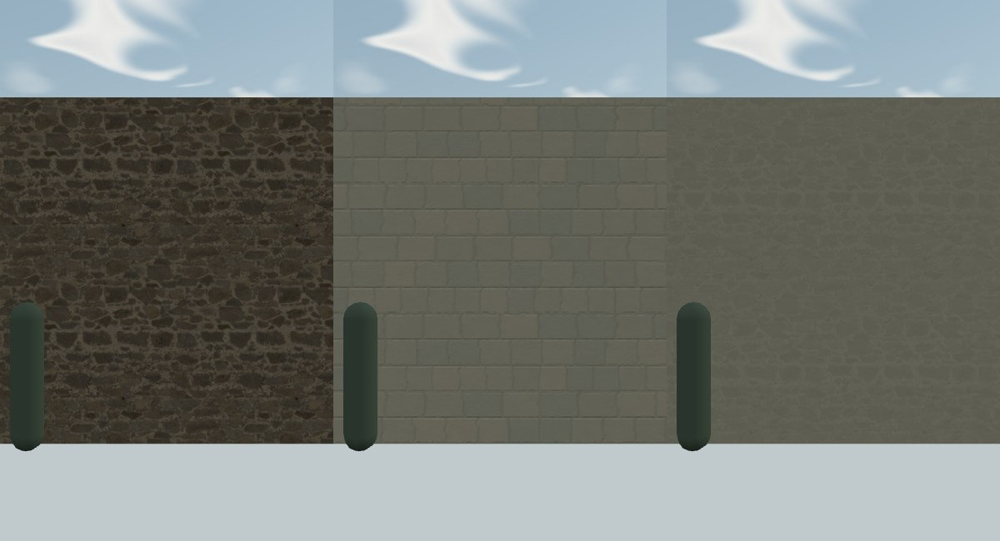
afternoon · clear
Photographique · PBRMission 12 · témoinHybride · palette M12
evening · clear
Photographique · PBRMission 12 · témoinHybride · palette M12
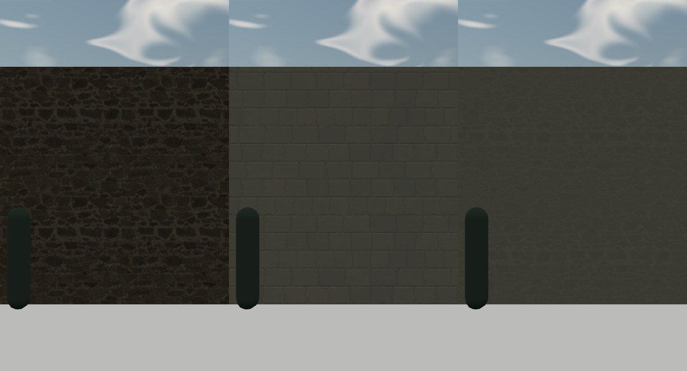
night · clear
Photographique · PBRMission 12 · témoinHybride · palette M12
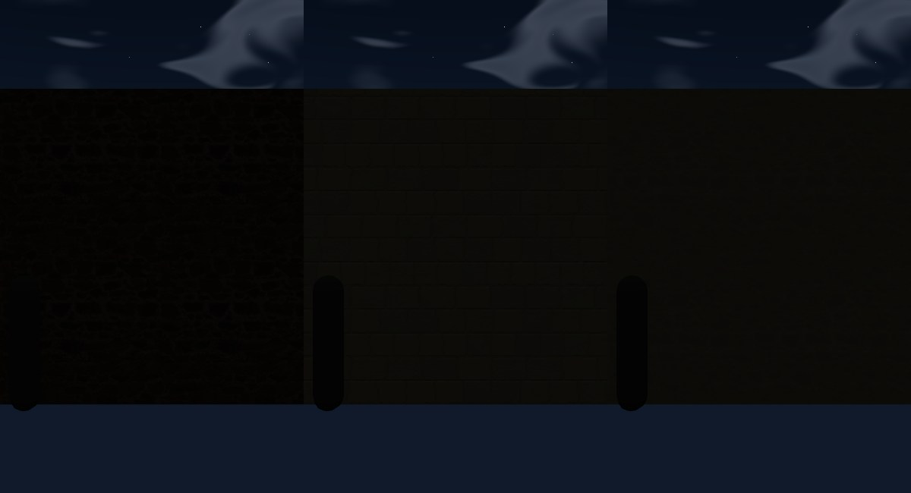
afternoon · overcast
Photographique · PBRMission 12 · témoinHybride · palette M12
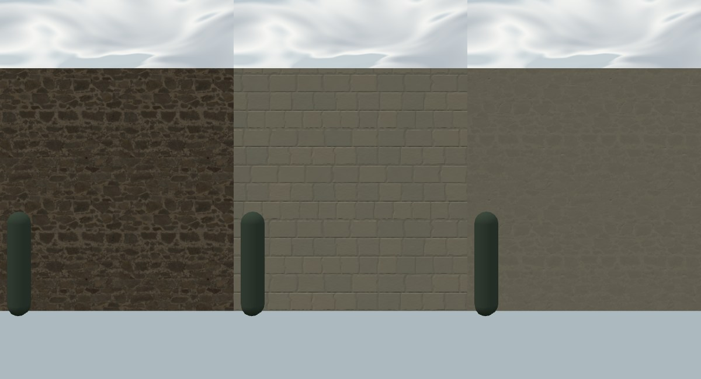
afternoon · rain
Photographique · PBRMission 12 · témoinHybride · palette M12
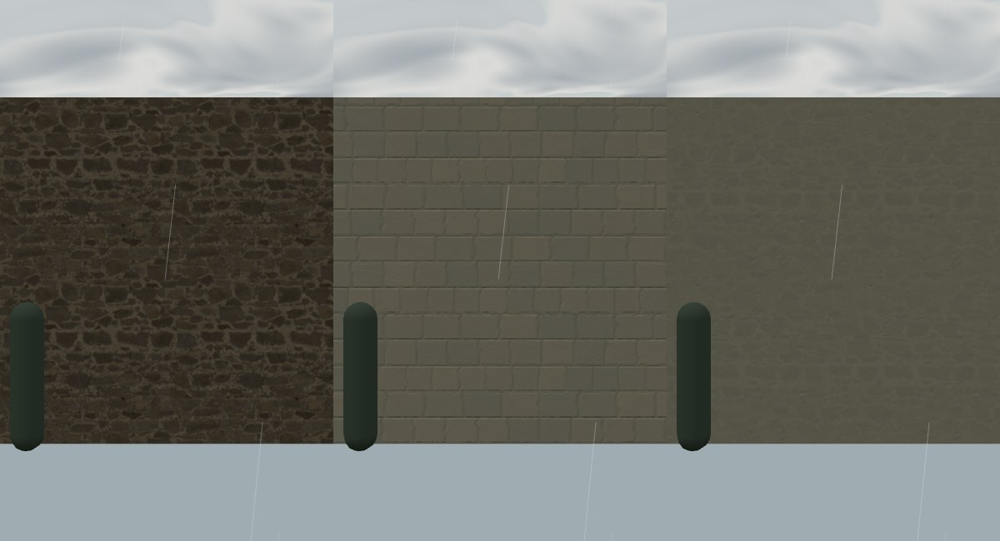
evening · rain
Photographique · PBRMission 12 · témoinHybride · palette M12
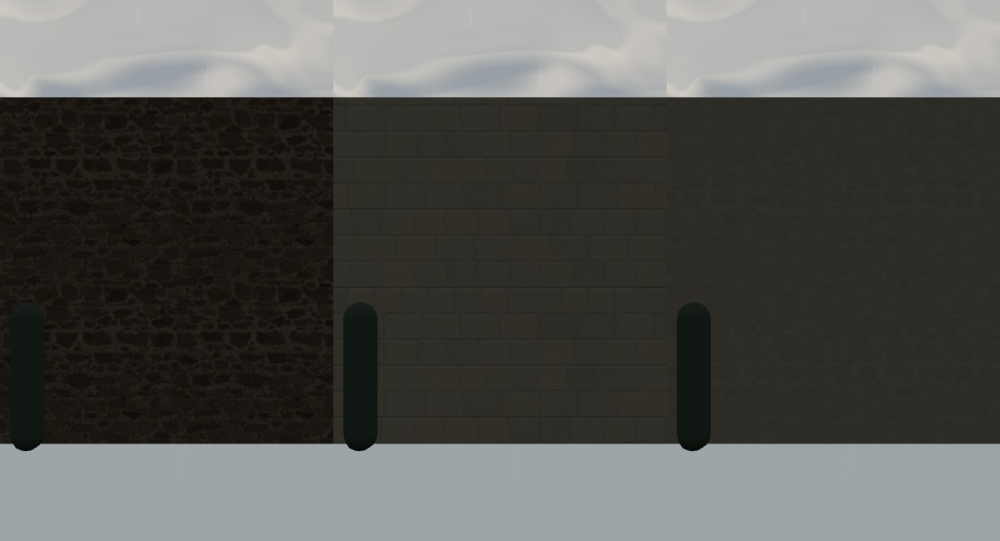
Le coût et les limites
405 rendus synchronisés avec lecture complète des pixels, Chromium/SwiftShader, 800 × 600. Trois passages alternés, 15 échantillons par combinaison ; médiane / P95 en millisecondes. Ces mesures décrivent cette scène logicielle simple, pas le coût dans le village, un GPU physique ou Android.
| Profil | Matière | PBR | M12 | Hybride |
|---|
| eco | stone-rubble | 89.5 / 118.3 | 70.5 / 90.3 | 81.4 / 112.8 |
| eco | roof-flat | 78.7 / 97.2 | 69.1 / 96.2 | 78.4 / 107.3 |
| eco | gravel | 70.4 / 105.2 | 65.1 / 85.1 | 66.0 / 78.2 |
| balanced | stone-rubble | 69.8 / 82.9 | 62.3 / 82.6 | 60.6 / 73.8 |
| balanced | roof-flat | 68.1 / 93.5 | 64.7 / 71.4 | 49.0 / 66.3 |
| balanced | gravel | 83.5 / 99.6 | 58.6 / 72.8 | 70.4 / 87.2 |
| quality | stone-rubble | 64.4 / 84.9 | 61.7 / 85.0 | 58.7 / 79.1 |
| quality | roof-flat | 69.4 / 82.8 | 55.2 / 78.9 | 57.3 / 71.1 |
| quality | gravel | 75.7 / 100.5 | 64.6 / 89.4 | 65.0 / 78.6 |
Les shaders, le nombre de lectures et l’éclairage diffèrent entre les approches : c’est précisément le compromis étudié. Un gain dans l’atelier n’est pas extrapolé au jeu. Le gravier hybride peut coûter davantage que son témoin ; conserver les meilleures solutions procédurales reste possible.
| Atlas partagé | Fichier compressé, octets | GPU estimé, mipmaps inclus | Interprétation |
|---|
| photographic-color.jpg | 327,866 | 5.06 Mio | sRGB |
| photographic-data.png | 938,777 | 2.53 Mio | linear data RG8 |
| hybrid.png | 1,578,189 | 5.06 Mio | linear data RGBA8 |
L’hybride occupe environ 5,06 Mio estimés pour dix emplacements utiles dans un atlas à douze cases ; le PBR environ 7,59 Mio sur deux atlas. Ce sont des comptes de texels, pas une mesure d’allocation GPU. La scène de comparaison garde les trois approches en mémoire ; elle n’est pas un budget de promenade.
Trois rechargements restent à 7 géométries et 10 textures, avec 7 programmes après le premier rechargement chaud. Une nouvelle image corrompue conserve la dernière bibliothèque valide. Aucun appel à un fournisseur pendant les inspections. Deux préparations donnent les mêmes fichiers et empreintes.
Mesures lisibles · Trace complète compressée · Préservation et reproduction · Procédure locale · Catalogue des matériaux
Les sources et cartes sont CC0 ; les auteurs et licences restent dans le catalogue. Correction d’échelle : Rock Face 03 fait 2,7 m selon le fournisseur ; les 27 m de Mission 12 sont conservés uniquement dans le témoin historique, sans correction du jeu ici. Les échelles de Bricks099 et Rock023 restent explicitement artistiques.
À valider : priorité à la pierre et aux enduits, dessin très fin de la tuile, retenue du contraste, variantes à garder en réserve et coût du gravier. Arrêt après 13B : attendre votre accord explicite pour intégrer ces matières en 13C.